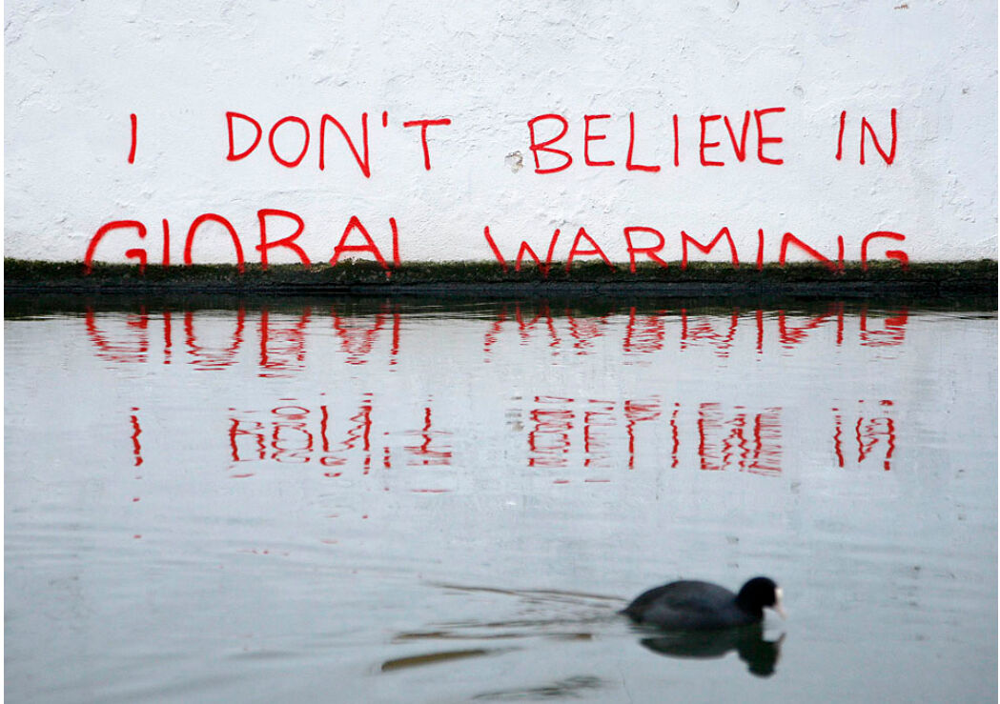
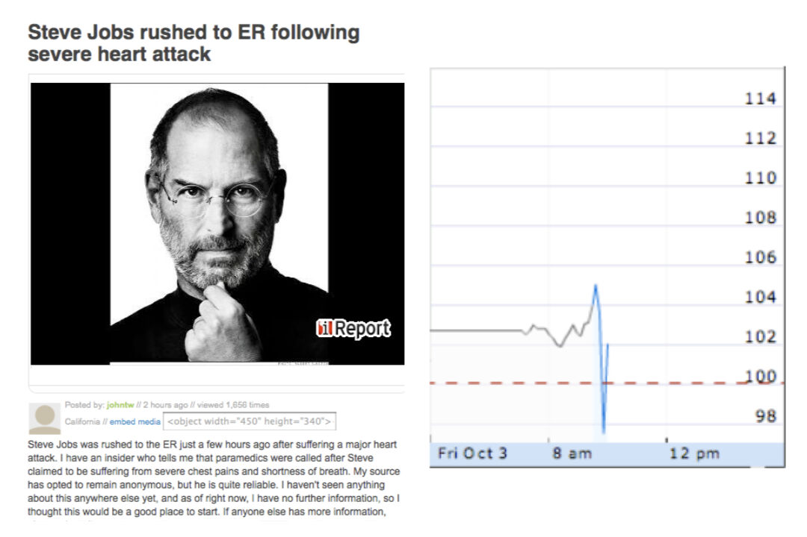
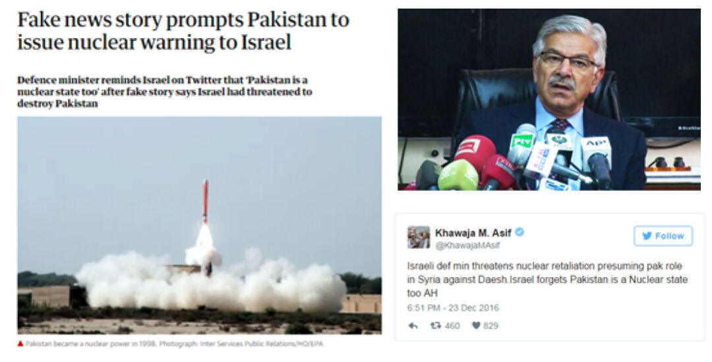

Öğrenen Sürümü
Eğitici Sürümü
Öğrenen Sürümü
Eğitici Sürümü
Modül 3: Bilgi Kirliliğinin Sebepleri ve Sonuçları
Modülün Tanımı
Bu Modülün temel amacı, katılımcıların bilgi kirliliği yaratılmasının arkasındaki motivasyonlar ve bilgi kirliliğinin olası etkileri hakkında farkındalığını artırmak, bu amaçla bilgi kirliliğinin nedenlerini ve sonuçlarını sunmaktır.
İkincil amaç, bu Modülün içeriğini kendi hedef kitlelerini eğitmek için kullanmak isteyen eğitmenlere rehberlik etmektir.
Bu amaçlarla bu Modülde, yanlış veya yanıltıcı bilgi yaratmanın ve yaymanın arkasındaki motivasyonlar ve bunun halk ve demokrasiler üzerindeki etkisi ile konunun nasıl öğretileceğine ilişkin yönergeler ele alınmaktadır.
Bu Modülü başarıyla tamamlayanlar şunları yapabilirler:
- bilgi kirliliğinin arkasındaki niyet ve motivasyonu anlar ve açıklayabilir
- bilgi kirliliğinin sonuçlarını anlar ve açıklayabilir
- bilgi kirliliğine karşı mücadelede bireylerin sorumluluklarını anlar.
Ek olarak, bu Modülü başarıyla tamamlayan eğitmenler, konuyla ilgili eğitim yönergelerini anlarlar.
Modülün Yapısı
Bu Modül aşağıdaki bölümlerden oluşur:
- Amaç, İçeriğin Tanımı ve Öğrenme Çıktıları
- Modülün Yapısı
- Öğrenenler için Yönerge
- Eğitmenler için Yönerge (hazırlık, kullanılacak yöntemler ve eğitmenler için ipuçları)
- İçerik (çalışma materyalleri ve alıştırmalar)
- Test
- Kaynakça (yararlanılan kaynaklar ve önerilen kaynaklar ile videolar)
Modülün ana hedefleri, içerik ve öğrenme çıktıları Modülün Tanımı bölümünde açıklanmıştır. Öğrenenler için Yönerge, öğrenenler için yönlendirme ve önerileri içerir. Eğitmenler için Yönerge, eğitimin farklı aşamalarında eğitmenlere rehberlik eder ve konuyu öğretirken faydalı olabilecek ipuçları sağlar. İçerik, tüm çalışma materyallerini ve ilgili alıştırmaları içerir. Test, katılımcıların kendilerini ve ilerlemelerini test edebilmeleri için hazırlanmıştır. Genellikle çoktan seçmeli veya doğru/yanlış sorularından oluşur. Kaynakça, yararlanılan kaynaklar ve önerilen kaynaklar şeklinde iki bileşenden oluşur. İçerik hazırlanırken yararlanılan ve atıf yapılan kaynaklar Kaynakça başlığı altında listelenmiştir. Ek Kaynakça, konuyla ilgili daha fazla bilgi edinmek isteyenler için okunması önerilen kaynaklar ve izlenmesi önerilen videoların bir listesinden oluşur.
Öğrenenler için Yönerge
Öğrenenlerden içeriği dikkatle okumaları, önerilen videoları izlemeleri ve alıştırmaları yapmaları beklenmektedir. Daha fazla bilgi gereksinimi duydukları konularda kaynakçalarda listelenen kaynaklara başvurabilirler. İçerik üzerindeki çalışmalarını tamamladıktan sonra, ilerlemelerini değerlendirmek için modül sonundaki testi yapmaları önerilir. Test sonuçlarına göre gerekirse çalışma materyali yeniden gözden geçirilebilir.
Eğitmenler için Yönerge
Bu bölüm, ele alınan konunun nasıl öğretileceğine ve Modül içeriğinin bu amaçla nasıl kullanılabileceğine ilişkin eğiticilere yönelik öneriler ve ipuçları içermektedir.
Hazırlık
Eğitim başlamadan önce görsel materyaller (resim ve video klipler) ve iyi seçilmiş örneklerle zenginleştirilmiş bir sunum (PowerPoint/Prezi/Canva) hazırlanması önerilir. Ayrıca bu Modüldeki örneklerin ve alıştırmaların hedef grubun ilgisine çekebilecek, daha aşina oldukları alanlardan seçilmesi önerilir. İyi bilinen yerel örneklerin seçilmesi, konuyu daha iyi açıklamaya yardımcı olacaktır. Ayrıca katılımcıların daha çok dikkatini çekecektir. Örnekler ne kadar tanıdık ve popüler olursa, mesaj o kadar iyi iletilecektir. Yerel (ulusal) haber medyası ve teyit platformları, gerçek hayattaki sonuçları yayınlanmış ve ayrıntılı olarak detaylandırılmış çok çeşitli bilgi kirliliği vaka çalışmaları örnek bulmak için iyi bir kaynak olabilir.
Başlarken
Konuya ısındırmak amacıyla başlangıçta Kahoot veya Mentimeter gibi araçlar kullanılarak katılımcılara konuyla ilgili genel ve kısa bazı sorular (3 ile 5 soru) yöneltilebilir. Böyle bir başlangıç katılımcıların konuyla ilgili mevcut bilgi düzeyleri hakkında bilgi de sağlayacaktır.
Kullanılacak Yöntemler
Eğitim sırasında çeşitli öğretim yöntemleri bir arada kullanılabilir:
- Ders anlatma
- Tartışma
- Grup çalışması
- Kendini yansıtma
Eğitmenler için İpuçları
Isınma
Katılımcıları sürece dahil etmenin ve öğrenecekleri şeyler hakkında ortak beklentiler oluşturmanın etkili bir yolu, konuyla ilgili birkaç ön soru sorarak düşünme ve tartışma olanağı yaratmaktır. Etkinlik şu şekilde gerçekleştirilebilir:
- Yanlış ve yanıltıcı bilgiyi kimlerin yaydığı sorulabilir
- Yanlış ve yanıltıcı bilginin neden yayıldığı sorulabilir
- Karşılaştıkları bir dezenformasyonun ciddi sonuçlarına örnek vermeleri istenebilir
- Yanlış veya yanıltıcı bilgi paylaşıp paylaşmadıkları, cevapları evet ise bunu yaparken niyetleri ve motivasyonlarının ne olduğu sorulabilir.
Tartışmalardan sonra, katılımcıların yanlış ve yanıltıcı bilgilerin yaratılması ve yayılmasının ardındaki ana motivasyonu anlamaları ve ayırt etmeleri sağlanmalıdır. Katılımcılara ayrıca bilgi kirliliğinin her zaman bazı sonuçları olduğu ve bunun sonuçlarından mez/dezenformasyonu oluşturanlar kadar yayanların da sorumlu olduğu anlatılmalıdır.
Dersin Amacının Belirtilmesi
Amaç netleştirilmelidir. Bu dersin amacı, bilgi kirliliğinin sebepleri ve sonuçları hakkında bilgilendirme yapma ve farkındalık yaratmadır. Isınma sorularının ardından amaç ve hedefleri netleştirmek daha kolay olacaktır.
Ders İçeriğinin Sunulması
İçerik sunulurken katılımcılarla etkileşim içinde olmak ve onları derse aktif katılıma teşvik etmek önemlidir. Bunun için aşağıda bazı öneriler sunulmuştur:
- Bilgi kirliliğinin arkasındaki motivasyonlara genel bir bakış sunmadan önce, katılımcılardan olası nedenleri ayrıntılı olarak açıklamaları istenebilir.
- Örnek sunulurken gerçek dünya örnekleri seçilmeli ve sunulan olaylar hakkında mümkün olduğunca çok arka plan bilgisi edinilmelidir. Böylece katılımcılar tarafından sorulursa ayrıntı vermek mümkün olur.
- Örnekler seçilirken, motivasyonların ve sonuçların bilindiğinden veya açıkça tanımlanabildiğinden emin olmak gerekir. Bazı durumlarda ana motivasyon bulanık olabilir.
- Ayrıntılarla birlikte bazı dezenformasyon örnekleri verilerek (gerçek dünyadan örnekler değilse bazı senaryolar üretilebilir) katılımcılardan bunların arkasındaki niyet ve olası motivasyonu belirlemeleri istenebilir.
- Ayrıntılarla birlikte bazı dezenformasyon örnekleri verilerek (gerçek dünyadan örnekler değilse bazı senaryolar üretilebilir) katılımcılardan bunların olası etkilerini (sonuçlarını) tartışmaları istenebilir.
Bitirirken
Dersin kısa bir özeti yapılarak verilmek istenen en önemli mesajların tekrarlanmasını sağlayacak birkaç soru sorulur.
- Katılımcılardan, ilk başta zararsız gibi görünen, ancak daha sonra ciddi sorunlara neden olduğu ortaya çıkan, karşılaştıkları bir bilgiyi/haberi aktarmaları istenebilir.
- Katılımcılara, güvenilir ve yanıltıcı bilgiler arasında ayrım yapmanın (özellikle siyaset ve halk sağlığı bağlamında) neden önemli olduğu sorulabilir.
Tartışmalardan sonra, katılımcıların mez/dezenformayon yaymanın arkasındaki ana motivasyonları ve bunların sonuçlarını anlayabildiklerinden emin olmak gerekir. Katılımcılar ayrıca yanlış bilgilerin yol açabileceği zarar düzeyinin değişebileceğini ancak sonuçlarından onu paylaşan herkesin sorumlu olduğunu anlamalıdır.
İçerik: Bilgi Kirliliğinin Sebepleri ve Sonuçları
Giriş
Bilgi kirliliğinin arkasındaki niyeti ve motivasyonu anlamak, onunla mücadele edebilmek için önemlidir. Yanlış veya yanıltıcı içeriklerin üretilmesi ve yayılmasının arkasında farklı niyetler ve çeşitli motivasyonlar vardır. Örneğin, Modül 2'de bahsedildiği gibi, dezenformasyon ve malenformasyon zarar vermek için kasıtlı olarak paylaşılırken, mezenformasyon zarar vermek amacı gütmez ancak istemeden zarar verebilir (Wardle, 2020). Kasıtlı olsun ya da olmasın, bilgi kirliliğinin her zaman bazı sonuçları vardır.
Motivasyonu Anlamak
Yanlış ve yanıltıcı içerik oluşturmanın dört ana nedeni vardır: Birincisi ideolojiktir (çoğunlukla politiktir). Propaganda, ikna, oyalama ve/veya provokasyon amacıyla yanlış veya yanıltıcı içerik kullanılır. Buradaki itici güç, esas olarak kamuoyunu şekillendirmek ve etkilemek, belirli fikirleri, ideolojiyi, partiyi veya insanları desteklemektir (Allcott & Gentzkow 2017, p. 217; Cooke, 2018; Wardle, 2020). İkincisi finansaldır. Bir web sitesinde sansasyonel ya da yanlış bir yazı, başlık ya da görsel sayesinde reklam alarak para kazanmak mümkündür. Burada tıklamalar gelir elde etmek için yönlendirilir. Yanlış veya önyargılı içerik, belirli ürünleri veya hizmetleri tanıtmak ve bazen diğerlerini itibarsızlaştırmak için de üretilir (Allcott & Gentzkow 2017, p. 217; Wardle, 2020. Üçüncüsü sosyal ve/veya psikolojiktir. Bazı insanlar sadece sorun çıkarma arzusuyla motive olurlar. Gazetecileri kandırıp kandıramayacaklarını veya insanları kışkırtıp kışkırtamayacaklarını görmek isterler (Wardle, 2020). Sosyal medyada beğenilme ihtiyacı, anlık tatmin ve ilgi görme isteği de psikolojik motivasyonlar arasında yer almaktadır (Cooke, 2018). Sonuncusu, hiciv ve parodi durumunda olduğu gibi eğlence ve mizahtır.
Sahte içerik, farklı niyet ve motivasyonlarla oluşturulur. Onları daha zararlı yapan şey ise yayılmasıdır. Yanlış içerik paylaşılmaz ve kitlelere ulaşmazsa kuşkusuz daha az zarar verir (Wardle, 2020).
Bilgi Kirliliğinin Sonuçları
Yanlış ve sahte haberler internette yaygındır ve insanları yanıltma potansiyeline sahiptir. 2016'da yapılan bir anket, sahte haber başlıklarının Amerikalı yetişkinlerin yaklaşık yüzde 75'ini kandırabildiğini ortaya koymuştur (Silverman & Singer-Vine 2016). Bazı durumlarda, insanlar karşılarına çıkan sahte haberleri görmezden gelirken, bazı durumlarda ise bunlara inanırlar. Sahte haberler seçim sonuçlarını etkileme, demokrasilere zarar verme, bireyleri, ulusları, işletmeleri itibarsızlaştırma ve/veya paniğe yol açma gibi somut eylemlere ve ciddi sonuçlara yol açmaktadır (Tandoc, 2018, p. 137).
Örnekler
Örnek 1: Marslıların İstilası
Geniş kitlelere yayılmış çok bilinen bir mezenformasyon örneği, Orson Welles'in 1930 yılında “Dünyalar Savaşı” adlı yayınıyla sebep olduğu kitlesel paniktir. Orson Welles’in Marslıların istilasını hikaye eden radyo draması yayınını, aktörlerin muhabirler, halk, uzmanlar ve hükümet yetkilileri rollerini oynadığı bir haber formatında yapması dinleyicilerin bunu gerçek bir haber olarak yorumlamasına ve paniğe kapılmasına neden olmuştur (Tandoc, 2018, p. 138).

Kaynak: Sandberg, October 31, 2013
Örnek 2: Brexit Referandumu
Birleşik Krallık'taki Brexit referandumunun sonuçları, ABD'deki 2016 başkanlık seçimleri, Le Pen'in Fransa seçimlerinde ikinci tur oylamaya ulaşması ve Kenya seçimlerinin iptal edilmesi, elimizde etkiyi kanıtlayan ampirik veriler olmamasına rağmen sistematik dezenformasyon kampanyalarının potansiyel gücünü gösteren bazı örneklerdir (Wardle & Derakhshan, 2017, p. 14).
Brexit referandumu durumunda, Brexit'i destekleyen basın, göçmenler ve AB üyeliğinin neden olduğu ekonomik yük hakkında çoğunlukla yanlış bir dizi olumsuz hikaye yayınlamıştır. Politikacılar ve basın, göçle ilgili kampanyalarında AB'nin Arnavutluk, Makedonya, Karadağ, Sırbistan ve Türkiye’yi de üyeliğe alma planları sonucunda 88 milyon kişinin İngiltere’de yaşama ve çalışma hakkı kazanacağı, bunun sonucunda 2030 yılına kadar beş milyona yakın AB göçmeninin İngiltere'ye gelebileceği yönünde iddialar ileri sürmüştür. Ayrıca AB'den ayrılmakla, İngiltere'nin AB bütçesine yaptığı katkının (yaklaşık olarak haftada 350 milyon sterlin), Ulusal Sağlık Sistemi’ne aktarılabileceği iddia edilmiştir (Grice, January 18, 2017).
 |
 |
Kaynak: CNN, May 8, 2017 |
Örnek 3: İklim Değişikliğinin İnkar Edilmesi
Son kırk yılda, ağırlıklı olarak fosil yakıt endüstrisi tarafından desteklenen, oldukça organize edilmiş, iyi finanse edilen bir kampanya, küresel iklim değişikliğini insan kaynaklı karbondioksit ve diğer sera gazları emisyonlarına bağlayan bilimsel çalışmaları gözden düşürmeye çalışmaktadır. Bu dezenformasyon çabaları, veriler üzerinde kafa karışıklığına, iklim bilimcilerin güvenirliğinin sorgulanmasına ve insanların iklim değişikliği üzerindeki etkisi konusundaki inancın sarsılmasına neden olmuştur (Renowden, February 26, 2014). Araştırma bulguları, iklim değişikliği hakkındaki bu kamuoyu yanılgısının, iklim değişikliği gerçeğini inkar edenlerin sayısında artış ve ilgili politikalara verilen destekte azalmalara yol açtığını kanıtlamaktadır (Cook, Lewandowsky & Ecker, 2017).
 |
 |
Örnek 4: Apple’ın Hisse Senedinde Düşüş
3 Ekim 2008'de bir iReport habercisi, Steve Jobs'un şiddetli bir kalp krizi sonrasında acil servise götürüldüğünü bildirmiştir. Rapor, Apple'ın yalanlamasının ardından CNN tarafından oluşturulan bir vatandaş gazeteciliği sitesi olan iReport web sitesinden kaldırılmıştır. Hikaye web sitesinde sadece 20 dakika kalmış olmasına rağmen (Blodget, October 3, 2008) şirketin hisse senedi fiyatının %10 düşmesine neden olmuştur (Chen, Conroy & Rubin, 2015).

Kaynak: Blodget, October 3, 2008
Örnek 5: Pizzagate Komplo Teorisi
2016'da ABD'nin Washington şehrinde silah taşıyan bir adam bir pizza restoranına girerek birkaç el ateş etmiştir. Silahlı kişi, restoranın, aslında hayali olduğu kanıtlanan sosyal medya hikayelerinde iddia edildiği gibi, Hillary Clinton'ın başkanlık kampanyasının üyelerini içeren gizli bir yeraltı insan kaçakçılığı merkezi olup olmadığını kendi kendine araştırmaya kalkmıştır (Silverman, 2016).

Kaynak: The New York Times
Örnek 6: İsrail’e Nükleer Uyarı
Pakistan savunma bakanı Khawaja Muhammed Asif, İsrail'in Pakistan'ı nükleer silahlarla tehdit ettiğini belirten asılsız bir rapora yanıt olarak benzer içerikte tehditkar bir tweet atmıştır (Goldman, 2016).

Örnek 7: Irak’ta Kitle İmha Silahları
Birçok Amerikalı, Irak ile El Kaide arasındaki bağlantılar ve kitle imha silahlarının varlığına ilişkin dezenformasyona ve iddialara dayanarak Irak Savaşlarını desteklemiştir (Saunders, 2013).

Kaynak: Zoroya, February 14, 2019
Örnek 8: ABD Meclis Binasına Saldırı
6 Ocak 2020'de, kamu görevlileri Joe Biden'ın Başkanlık Seçimlerindeki zaferini onaylamak için bir araya gelirken, Donald Trump destekçileri de bir yalan etrafında birleşerek hareke geçmiştir. Onlara göre seçimler yasa dışı bir şekilde Trump'tan çalınmıştır. Bu inançla meclis binasını basıp beş kişinin ölümüne neden olan bir isyan çıkarmışlardır (Hemsley, 2021). Olay sırasında yüzlerce yaralanma olmuş ve 300'den fazla kişi federal suçlarla suçlanmıştır (Mendoza & Linderman, 2021). ABD meclis binasına yapılan saldırıdan kaynaklanan hasarları onarma maliyeti ve ilgili güvenlik harcamaları milyonlarca doları aşmıştır (Chappel, 2021).
 |
|
Kaynak: Wikipedia |
Örnek 9: Sağlık Çalışanlarına Yönelik Ölüm Tehditleri
Covid-19 salgını sırasında interneti saran komplo teorileri hayatları tehlikeye atmıştır. Covid-19 komplo teorileri (örn. 5G, laboratuvarda üretildi gibi) pandemi vurur vurmaz başlamıştır. 5G teknolojisiyle ilgili yanlış iddialar, telefon direklerine yönelik kundaklama olaylarına ve telekomünikasyon çalışanlarına yönelik saldırılara neden olmuştur. Donald Trump ve Jair Bolsonaro gibi dünya liderlerinin Covid-19'u iyileştirdiğini veya önlediğini iddia ettiği bir ilaç olan hidroksiklorokin toplu zehirlenmelere neden olmuştur (Spring, December 26, 2020).
Dünyanın çeşitli yerlerinde sağlık yetkilileri, koronavirüsle mücadele için önlemler yayınladıktan sonra tehdit edilmeye başlamıştır. Bulaşıcı bir hastalık uzmanı olan Dr. Anthony Fauci, ABD'de koronavirüsün yayılmasını bastırmaya yönelik diğer çabaların yanı sıra sosyal mesafe önlemleri, genişletilmiş testler ve temaslı takibi konusundaki tavsiyeleri nedeniyle ölüm tehditleri almıştır. Avustralya'da Queensland'in baş sağlık görevlisi Jeannette Young da tehditlerle karşı karşıya kalmış, Young, komşu eyaletlerle Queensland sınırlarını kapattıktan sonra evinin önüne polis koruması yerleştirilmesi gerekmiştir. Almanya'da Karl Lauterbach ve Christian Drosten gibi uzmanlar, ülkenin baharda okulları kapatması ve evden çıkma yasağı uygulaması ardından yine ölüm tehditleri almıştır. Salgının Ocak 2020'de başlamasından sonra düzinelerce halk sağlığı görevlisi görevlerinden ayrılmış veya emekli olmuştur (Al-Arshani, September 15, 2020).

Kaynak: Al-Arshani, September 15, 2020
Örnek 10: Bir Influencer Tarafından Koronavirüs’ün Reddedilmesi
Yeni ortaya çıkan influencer’lar, pandemi hakkında temelsiz iddiaları teşvik ederek yüksek sayıda takipçi kazanmışlardır. İngiltere'nin komplo topluluğunun lideri Kate Shemirani, koronavirüsün varlığını inkar etmek de dahil olmak üzere yanlış iddialarla on binlerce takipçi toplamış ve Covid-19'un semptomlarını 5G radyo dalgalarına bağlamıştır. Londra'daki protestolarda binlerce insana hitap eden Shemirani’nin oğlu Sebastian Shemirani, annesinin halk sağlığı üzerindeki etkisiyle ilgili korkuları nedeniyle BBC ile temasa geçmiştir (Spring, December 26, 2020).

Kaynak: Metro: King, September 20, 2020
Alıştırmalar
Alıştırma 1
Küresel iklim değişikliğinin inkarı dezenformasyonunun olası etkileri/sonuçları üzerinde tartışın.
Alıştırma 2
Covid-19 tedavileriyle ilgili yanlış iddiaların olası etkileri/sonuçları üzerinde tartışın.
Alıştırma 3
Test
Kaynakça
Al-Arshani, S. (September 15, 2020). Health officials worldwide are receiving death threats because of their work to educate the public and stop the spread of Covid-19. Insider.
Allcott, H. & Gentzkow, M. (2017). Social media and fake news in the 2016 election. Journal of Economic Perspectives, 31(2), 211–236. doi:10.1257/jep.31.2.211.
Blodget, H. (October 3, 2008). Apple denies Steve Jobs heart attack report: “It is not true”. Insider.
Chappel, B. (February 24, 2021). Architect Of The Capitol Outlines $30 Million in Damages From Pro-Trump Riot. NPR News.
Chen, Y., Conroy, N.J. & Rubin, V.L. (2015). Misleading online content: Recognizing clickbait as ‘false news’.” In Proceedings of the 2015 ACM on Workshop on Multimodal Deception Detection, Seattle, Washington, USA: ACM.
Cook, J., Lewandowsky, S., Ecker, U.K.H. (2017). Neutralizing misinformation through inoculation: Exposing misleading argumentation techniques reduces their influence. PLOS ONE 12(5): e0175799.
CNN (May 8, 2017). New Banksy Brexit mural unveiled on day of French vote. CNN.
Cooke, N. (2018). Fake news and alternative facts: Information literacy in a post-truth era. ALA.
Goldman, R. (2016). Reading Fake News, Pakistani Minister Directs Nuclear Threat at Israel. The New York Times. Available at:
Graham-Harrison, E. (December 25, 2016). Fake news story prompts Pakistan to issue nuclear warning to Israel. The Guardian.
Gramling, C. (May 18, 2021). Climate change disinformation is evolving. So are efforts to fight back. Science News.
Grice, A. (January 18, 2017). Fake news handed Brexiteers the referendum – and now they have no idea what they're doing. The Independent.
Hemsley, J. (February 8, 2021). When Fake News Turns Into Conspiracy Theories: The viral factor in today’s media landscape, and what we can do to stop it.
King, J. (September 20, 2020). Anti-mask protest leader is suspended nurse who compared lockdown to the Holocaust. Metro.
Mendoza, M. & Linderman, J. (March 5, 2021). Chaos of U.S. Capitol riot that left 5 people dead revealed. Global News. Available at:
Renowden, G. (February 26, 2014). Investigating climate change deniers and their spin against global warming. The Daily Blog.
Sandberg, M. (October 31, 2013). Historic Storytelling: Orson Welles scares the nation.
Saunders, L. (2013). Information as weapon: Propaganda, politics, and the role of libraries. In Mueller, D. M. (Ed.). Imagine, Innovate, Inspire: The Proceedings of the ACRL 2013 Conference, Indianapolis, IN: ACRL.
Silverman, C. & Singer-Vine, J. (2016). Most Americans who see fake news believe it, new survey says. Buzzfeed Poll About Fake News.
Silverman, C. (2016). Here are 50 of the Biggest Fake News Hits on Facebook from 2016. BuzzFeed.
Spring, M. (December 26, 2020). The casualties of this year's viral conspiracy theories. BBC News.
Tandoc, E.C., Lim, Z. W. & Ling, R. (2018). Defining “fake news”. Digital Journalism, 6(2), 137-153. DOI: 10.1080/21670811.2017.1360143
Wardle, C. & Derakhshan, H. (2017). Information disorder: Toward an interdisciplinary framework for research and policymaking. The Council of Europe.
Wardle, C. (2020). The Age of information disorder. In C. Silverman (Ed.). Verification Handbook for Disinformation and Media Manipulation, 3rd Ed. European Journalism Centre.
Zoroya, G. (February 14, 2019). Whatever happened to Iraq's weapons of mass destruction? USA Today.
Önerilen Kaynaklar
Cooke, N. (2018). Fake news and alternative facts: Information literacy in a post-truth era. ALA. Saunders, L. (2013). Information as weapon: Propaganda, politics, and the role of libraries. In Mueller, D. M. (Ed.). Imagine, Innovate, Inspire: The Proceedings of the ACRL 2013 Conference, Indianapolis, IN: ACRL.
Silverman, C. (2016). Here are 50 of the Biggest Fake News Hits on Facebook from 2016. BuzzFeed.
Tandoc, E.C., Lim, Z. W. & Ling, R. (2018). Defining “fake news”. Digital Journalism, 6(2), 137-153. DOI: 10.1080/21670811.2017.1360143.
Turcilo, L. & Obrenovic, M. (2020). Misinformation, disinformation, malinformation: Causes, trends and their influence on democracy. A Publication of Heinrich Boll Foundation.
Wardle, C. (2019). First Draft’s essential guide to understanding information disorder. First Draft.
Wardle, C. (2020). The Age of information disorder. In C. Silverman (Ed.). Verification Handbook for Disinformation and Media Manipulation, 3rd Ed. European Journalism Centre.
Wardle, C. & Derakhshan, H. (2017). Information disorder: Toward an interdisciplinary framework for research and policymaking. The Council of Europe.
Önerilen Videolar
Wardle, C. (2020). The impact of sharing. FirstDraft.